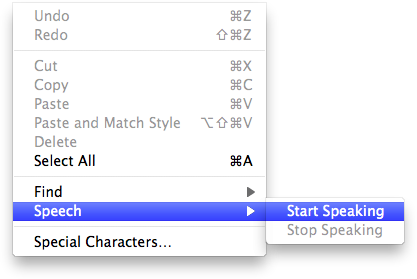

Murasaki is developed for Mac OS X, by using Cocoa framework. Because Murasaki is a Cocoa application, Murasaki integrates with various useful features of Mac OS X.
Trackpad Gesture
Trackpad gestures are available on Murasaki. You can swipe to back/forward history, pinch to zoom in/out.
Popup Dictionary
Popup dictionary is appeared by pressing "Command + Control + D" keyboard shortcut when a mouse cursor is on a word.
Popup dictionary
Text to Speech
You can use "Text to Speech" that is buil-in feature in Mac OS X on Murasaki.

Text to Speech
Vertical writing mode
Normally, sentences are displayed horizontally. You can change text direction from horizontal to vertical, by installing or building Webkit Nightly which -webkit-writing-mode property is available. To display sentences vertically, launch Murasaki by typing command as follows and open a EPUB document that -webkit-writing-mode property is specified like vertical-rl.
env DYLD_FRAMEWORK_PATH=/path/to/WebKitNightlyFrameworks \
open /Applications/Murasaki.app
/path/to/WebkitNightlyFrameworks is path to framework directory of Webkit Nightly. If you have built Webkit Nightly, specify /path/to/Webkit/WebkitBuilt/Debug, otherwise /Applications/Webkit.app/Contents/Frameworks/10.6.